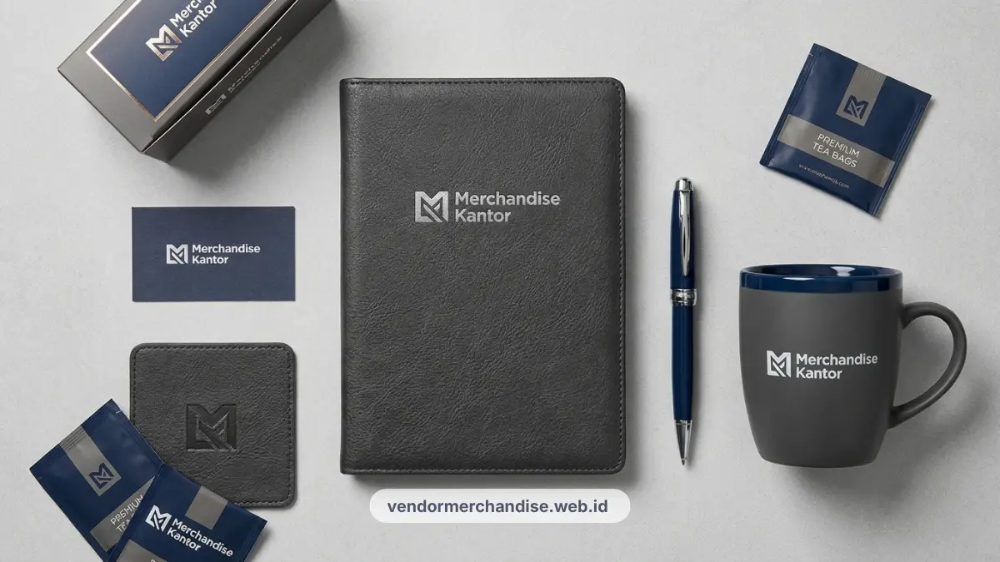

Notes dan pulpen custom logo untuk perusahaan di Bandung tersedia dalam bahan kertas daur ulang dan pulpen ramah lingkungan, cocok dijadikan gift karyawan maupun tamu meeting dengan biaya yang lebih terjangkau.
Kenapa Stationery Custom Tetap Diminati sebagai Merchandise Kantor
Stationery custom seperti notes dan pulpen tetap diminati karena biaya produksinya lebih terjangkau namun tetap sering dipakai karyawan maupun tamu dalam aktivitas kerja sehari-hari.
Notes dan pulpen sering dipilih sebagai merchandise pendamping saat perusahaan mengadakan meeting, seminar, atau pelatihan internal, karena kedua barang ini memang dibutuhkan langsung oleh peserta selama acara berlangsung.
Selain itu, notes dan pulpen custom juga cocok dijadikan bagian dari starter kit karyawan baru, sehingga logo perusahaan sudah terlihat sejak hari pertama karyawan bekerja.
Karena ukurannya yang ringkas dan biaya yang relatif rendah dibanding merchandise lain, stationery custom mudah dipesan dalam jumlah besar tanpa mengurangi kualitas cetak logo.
Pilihan Produk Notes dan Pulpen Custom Logo untuk Kantor
Berikut beberapa pilihan notes dan pulpen custom logo yang umum dipesan perusahaan untuk kebutuhan gift karyawan maupun tamu meeting:
- Notebook hardcover dengan cover custom logo, cocok untuk kebutuhan meeting formal.
- Notes softcover berbahan kertas daur ulang, pilihan ekonomis untuk pesanan jumlah besar.
- Pulpen custom logo berbahan plastik daur ulang, cocok dipasangkan dengan notes softcover.
- Pulpen kayu custom logo, memberi kesan lebih natural dan selaras dengan tema ramah lingkungan.
- Set notes dan pulpen dalam satu paket bundling untuk kebutuhan seminar atau workshop korporat.
Setiap pilihan dapat disesuaikan dengan ukuran notes, jenis sampul, dan model pulpen sesuai kebutuhan acara perusahaan.

Material Notes dan Jenis Pulpen yang Direkomendasikan
Kertas daur ulang bersertifikasi dan pulpen berbahan dasar kayu atau plastik daur ulang menjadi kombinasi yang paling direkomendasikan untuk merchandise stationery bertema ramah lingkungan.
Beberapa pertimbangan material yang umum dipakai:
- Kertas daur ulang: memiliki tekstur natural namun tetap nyaman dipakai untuk menulis sehari-hari.
- Cover notes berbahan kraft atau kanvas tipis: memberi kesan earthy yang selaras dengan tema sustainability.
- Pulpen kayu: tahan lama dan memberi kesan premium meski harga produksinya tetap terjangkau.
- Pulpen plastik daur ulang: alternatif pengganti pulpen plastik konvensional dengan fungsi yang tetap sama.
Pemilihan material ini membantu notes dan pulpen tetap nyaman dipakai tanpa mengurangi kesan ramah lingkungan yang ingin ditonjolkan perusahaan.
Cara Memadukan Notes dan Pulpen dengan Tema Ramah Lingkungan
Notes dan pulpen dapat dipadukan dengan tema ramah lingkungan melalui pemilihan material daur ulang, desain minimalis, dan pengurangan elemen kemasan yang tidak diperlukan.
Beberapa langkah yang dapat diterapkan:
- Memilih notes dengan sampul polos berbahan daur ulang tanpa laminasi plastik berlebihan.
- Menyesuaikan warna cover dengan warna natural bahan asli, bukan menutupinya dengan lapisan cetak penuh.
- Menggunakan kemasan kertas sederhana dibanding plastik pembungkus saat notes dan pulpen dibagikan dalam jumlah besar.
- Menonjolkan logo perusahaan dengan ukuran yang proporsional agar tampilan tetap simpel dan tidak berlebihan.
Pendekatan ini membuat notes dan pulpen tidak hanya berfungsi sebagai alat tulis, tetapi juga memperkuat kesan bahwa perusahaan konsisten menerapkan tema ramah lingkungan pada setiap merchandise yang dibagikan.
Ide Paket Bundling Notes dan Pulpen untuk Kebutuhan Kantor
Paket bundling notes dan pulpen sering dipilih perusahaan karena memberikan tampilan merchandise yang lebih lengkap dibanding hanya membagikan satu jenis produk saja.
Beberapa ide paket bundling yang umum dipesan:
- Notebook hardcover dipasangkan dengan pulpen kayu dalam satu kemasan kertas sederhana.
- Notes softcover, pulpen plastik daur ulang, dan tote bag kanvas kecil sebagai satu set starter kit karyawan baru.
- Set notes dan pulpen ditambah mug keramik untuk kebutuhan gift klien dalam satu gift box.
- Paket notes dan pulpen ukuran ringkas untuk kebutuhan seminar dengan jumlah peserta besar.
Paket bundling ini memudahkan perusahaan menyiapkan merchandise dalam jumlah banyak tanpa perlu memesan setiap kategori produk secara terpisah.

Pesan Notes dan Pulpen Custom Logo untuk Perusahaan Anda
Tim Kami melayani pemesanan notes dan pulpen custom logo dengan pilihan material ramah lingkungan sesuai kebutuhan perusahaan Anda di Bandung.
Hubungi Kami sekarang untuk konsultasi paket bundling dan estimasi jumlah pesanan stationery kantor Anda.